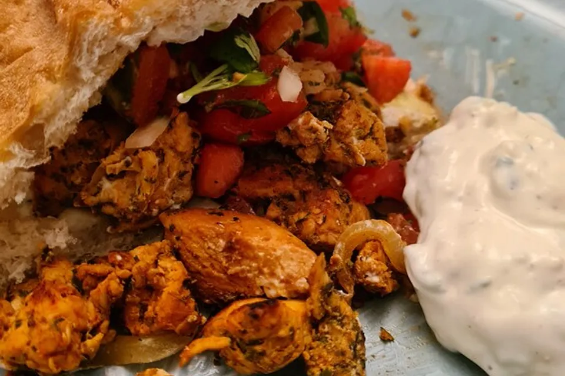

<!DOCTYPE html>
<html lang="de" onload="render()">
  <head class="head">
    <meta charset="UTF-8" />
    <meta name="viewport" content="width=device-width, initial-scale=1.0" />
    <link rel="icon" type="image/png" href="./img/logo_small.png" />
    <title>Rezept 1</title>
    <link rel="stylesheet" href="./style.css" />
    <link
      rel="stylesheet"
      href="./fontawesome-free-6.7.2-web/fontawesome-free-6.7.2-web/css/all.css"
    />
    <link rel="preconnect" href="https://fonts.googleapis.com" />
    <link rel="preconnect" href="https://fonts.gstatic.com" crossorigin />
    <link
      href="https://fonts.googleapis.com/css2?family=Raleway:ital,wght@0,100..900;1,100..900&display=swap"
      rel="stylesheet"
    />
  </head>
  <body id="body" onload="render()">

    <!-- <main class="main_rezept">
      <div class="banner">
        <h3 class="title3">Hähnchen-Döner</h3>
        
        <p>
          <span><i class="fa-regular fa-clock"></i>15min</span>
          <span><i class="fa-solid fa-signal"></i>simple</span>
          <span><i class="fa-solid fa-calendar"></i>31.05.2025</span>
          <span><i class="fa-solid fa-chart-column"></i>393kcal</span>
        </p>
      </div>
      <div class="form">
        Zutaten für
        <input
          type="number"
          name="portion"
          id="portion_number"
          value="1"
          min="1"
        />
        <button>Portionen</button>
      </div>
      <table>
        <tr>
          <td></td>
        </tr>
        <tr>
          <td><span>1</span> Alfreds Futterkiste</td>
        </tr>
        <tr>
          <td>Centro comercial Moctezuma</td>
        </tr>
        <tr>
          <td>Ernst Handel</td>
        </tr>
        <tr>
          <td>Island Trading</td>
        </tr>
        <tr>
          <td>Laughing Bacchus Winecellars</td>
        </tr>
        <tr>
          <td>Magazzini Alimentari Riuniti</td>
        </tr>
      </table>

        <div class="zubereitung">
            <h3 class="title3">Zubereitung</h3>
            <p>
                <span><i class="fa-regular fa-clock"></i>ca. 15 minuten</span>
                <span><i class="fa-regular fa-clock"></i>gesamtzeit ca. 15 minuten</span>
            </p>
            <p class="zutate">
                Die Hähnchenbrust in Würfel schneiden, mit 1 EL Paprikapulver bestreuen, mit Salz und Pfeffer würzen und in einer Pfanne braten. Die Paprikaschote würfeln, in eine separate Pfanne geben und ebenfalls braten.
                Die Tomaten entkernen und in Streifen schneiden. Die Tomaten- und Paprikastreifen zum Hähnchen geben und warmhalten (Achtung, die Tomaten sollen knackig bleiben, nur leicht drin aufwärmen!).
                Die Gurke würfeln. Mit etwas Öl, Salz, Pfeffer, Zucker, etwas Zitronensaft, Dill und Petersilie vermengen.
                Den Knoblauch pressen, die Chilischote sehr fein schneiden. Beides in den Joghurt geben. Mit Salz, Pfeffer und einem Spritzer Zitronensaft abschmecken.
                Das Fladenbrot vierteln und im Backofen aufbacken. Das Fladenbrot mit dem Dip, dem Gurkensalat und der Hähnchenmischung füllen.
            </p>
        </div>

        <div class="ersteller">
            <h4>Rezept erstellt von</h4>
            <div class="profile">
                
                <p>Rucel Dev</p>
            </div>
        </div>
    </main> -->

    <script src="./script.js"></script>
  </body>
</html>
